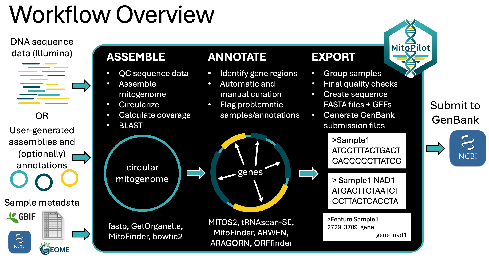

MitoPilot 


Please see the documentation website for more details.
MitoPilot is a product of the NMNH Ocean DNA initiative and does not represent an official Smithsonian Institution position or product.
Overview
MitoPilot is a package for the assembly and annotation of mitochondrial genomes from genome skimming data. The core application consists of a Nextflow pipeline that is wrapped in an R package, which includes an R-Shiny graphical interface to monitor and interact with processing parameters and outputs. Currently the pipeline expects paired-end Illumina reads as the raw input and performs the following steps.
- Mitogenome assembly
- fastp for quality control and adapter trimming
- GetOrganelle (default), MitoFinder, or MapToRef for mitogenome assembly (see choosing an assembly method)
- bowtie2 for read mapping to calculate coverage and error rates.
- NCBI BLAST against a local database of all annotated metazoan mitogenomes in GenBank, packaged in the MitoPilot container, to find the closest reference for automatic and manual curation
- Mitogenome annotation
- MITOS2 for rRNA, PCG, and tRNA annotation
- tRNAscan-SE for tRNA annotation
- MitoFinder for rRNA and PCG annotation (optional)
- ARWEN for tRNA annotation (optional)
- ARAGORN for tRNA annotation (optional)
- ORFfinder identify additional open reading frames (ORFs) (optional)
- Custom scripts for gene boundary refinement and annotation file formatting
- Validation to flag possible issues or known errors that would be rejected by NCBI GenBank
- Manual curation of annotations using the integrated Shiny App
- Data export
- Custom scripts to export data in a format suitable for submission to NCBI GenBank
Optionally, MitoPilot can proceed straight to annotation and curation if the user supplies mitogenome assemblies with the new_project_userAsmb() function. If you already have an annotation for each assembly (GFF3, BED, or GenBank feature table), use new_project_userAnnot() to skip assembly and annotation and go straight to review, curation, and validation.

Installation
MitoPilot needs R (>= 4.4.0), Java 17+, Nextflow (24.10.x - 25.10.x), and a container runtime (Docker locally, or Singularity/Apptainer on a cluster). Clusters that forbid containers can use the native install instead.
if (!requireNamespace("BiocManager", quietly = TRUE)) {
install.packages("BiocManager")
}
BiocManager::install("NMNH-OceanDNA/MitoPilot")See Installation and Requirements for the full requirements, disk space, updating and version pinning, and container cache setup. Cluster-specific instructions are available for Smithsonian Hydra and NOAA SEDNA; for any other cluster see HPC cluster support.
Quick start
MitoPilot ships a small pre-filtered test dataset. Running it end to end is the recommended way to verify your installation and learn the interface before using your own data.
The test project tutorial walks the whole pipeline using this test project.
Want to skip straight to using MitoPilot with your own data? Head on over to Starting Your Own Project.
Sample metadata can be imported directly from GEOME, GBIF, or NCBI BioSample records; see Sample Metadata.
Taxonomic Scope
MitoPilot was initially built for fish mitogenomes, but It has since been extended with curation and validation rulesets for the groups below.
| Clade | Common name | curate_target | Status |
|---|---|---|---|
| Actinopterygii | Ray-finned fishes |
fish_mito
|
Tested |
| Annelida | Annelids |
annelid_mito
|
Testing in progress |
| Ascidiacea | Sea squirts |
ascidiacea_mito
|
Untested |
| Asteroidea | Sea stars |
starfish_mito
|
Tested |
| Aves | Birds |
bird_mito
|
Untested |
| Bivalvia | Bivalves |
bivalvia_mito
|
Untested |
| Bryozoa | Bryozoans |
bryozoa_mito
|
Untested |
| Copepoda | Copepods |
copepod_mito
|
Testing in progress |
| Crinoidea | Crinoids |
crinoidea_mito
|
Untested |
| Ctenophora | Ctenophores |
ctenophore_mito
|
Testing in progress |
| Demospongiae | Demosponges |
demospongiae_mito
|
Untested |
| Diptera | True flies |
diptera_mito
|
Tested |
| Echinoidea | Sea urchins |
echinoidea_mito
|
Untested |
| Gastropoda | Gastropods |
gastropoda_mito
|
Testing in progress |
| Hexacorallia | Hexacorals |
hexacoral_mito
|
Tested |
| Holothuroidea | Sea cucumbers |
holothuroidea_mito
|
Untested |
| Homoscleromorpha | Homoscleromorph sponges |
homoscleromorpha_mito
|
Untested |
| Hydrozoa | Hydrozoans |
hydrozoa_mito
|
Testing in progress |
| Lepidosauria | Lepidosaurs |
lepidosaur_mito
|
Untested |
| Malacostraca | Malacostracans |
malacostraca_mito
|
Testing in progress |
| Mammalia | Mammals |
mammal_mito
|
Untested |
| Nemertea | Ribbon worms |
nemertea_mito
|
Testing in progress |
| Octocorallia | Octocorals |
octocoral_mito
|
Tested |
| Ophiuroidea | Brittle stars |
ophiuroidea_mito
|
Untested |
| Platyhelminthes | Flatworms |
platyhelminthes_mito
|
Untested |
| Polychaeta | Polychaetes |
polychaeta_mito
|
Testing in progress |
| Pycnogonida | Sea spiders |
pycnogonida_mito
|
Untested |
| Scyphozoa | True jellyfishes |
scyphozoa_mito
|
Testing in progress |
| Sipuncula | Peanut worms |
sipuncula_mito
|
Untested |
| Testudines | Turtles |
turtle_mito
|
Tested |
| Thaliacea | Salps |
thaliacea_mito
|
Testing in progress |
| Thecostraca | Barnacles |
thecostraca_mito
|
Untested |
See the curation ruleset browser for details about each curation ruleset. The curation ruleset can be set individually for each sample in the Curate Opts. window in the MitoPilot app.
All curation rulesets ship inside the Docker image (macguigand/MitoPilot). If MitoPilot doesn’t have a curation ruleset for your taxonomic group, please open an issue or contact Dan MacGuigan at macguigand@si.edu.
For groups other than fishes, make sure you build or pick the appropriate reference databases. There are three independent kinds of databases:
- Assembly references for GetOrganelle, MitoFinder, or MapToRef.
MitoPilot::custom_assembly_db()builds a clade-wide database for GetOrganelle and MitoFinder automatically, with no external tools required; MapToRef instead uses a single reference mitogenome you supply yourself. Each sample carries its own: add aReferencecolumn (and, for a FASTA, aReference_topologycolumn) to your mapping CSV, callMitoPilot::set_maptoref_refs(), or click the sample’s MapToRef ref cell in the Assemble table. A reference may be a file path, a URL, or an NCBI accession; the mapper and its options come from the sample’s parameter set. See building custom databases. - Annotation references for MITOS2. MitoPilot includes Chordata and Metazoa databases, selectable in the
Annotate Opts.window. - Curation references, chosen independently of the annotation database. The bundled database is
Metazoa_RefSeq235; a custom database can be chosen in theCurate Opts.window. MitoPilot also folds each sample’s assembly BLAST results into the curation references automatically.
Documentation
| Page | What it covers |
|---|---|
| Tutorial | Full walkthrough, then starting your own project |
| Installation and Requirements | Prerequisites, installing, updating, container cache |
| HPC cluster support | Executors, cluster profiles, SSH tunnel, submitting runs |
| Curation ruleset browser | What each clade ruleset enforces |
| Building custom databases | Assembly and curation reference databases |
| Handling difficult assemblies | Resolving competing assemblies and fragmented scaffolds |
| Handling difficult annotations | Missing genes, wrong strand, and other annotation problems |
| FAQ and Troubleshooting | Common questions and pipeline failures |
| Reference | All functions |
| Changelog | Release notes and container tags |